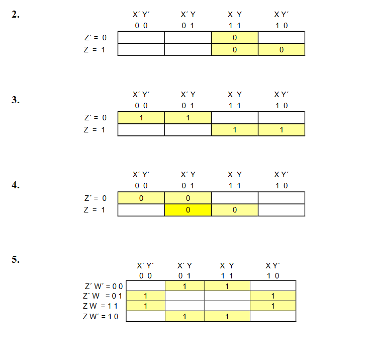

Ejercicios de logica de sistemas
deduccion natural
1. ( p v q ) → ┐( s ^ t ), p ├ ┐ ( s ^ t )
2. p → ( q → r ), ( p ^ q ) ├ r
3. G → H, ┐G → ┐┐F, ┐ H ├ F
4. ┐ q v s, ┐s, ┐ ( r ^ s ) → q ├ r
5. s v ┐r, t → ┐r, t ├ ┐r
6. p, ( p v q ) → r ═› r
7. p ^ ( q ^ r ) ├ r
8. p ^ ( q v r ), ( p v r ) → ( s ^ t ) ├ t
9. (p → q) , (r → s), (s ^ q) → t ├ (p → r) → t
10. . p ^ q, r → (q → s) ├ r → (p → s)
11. p, q, (p ^ q) → r ├ r
12. p → q, q → (r → t), t → s ├ (p ^ r) → s
13. p → (q ^ ┐┐ r) ├ p → r
14. p q, q → r ├ p → r
15. p ├ (p v q) → (p v r)
algebra booleana
circuitos logicos
2A (X * Y)’ * (X’ + Y) * (X’ * Y’)’ * (X’ + Y + Z) * (X’ * Y’ * Z’)’ + (X’ * Y’ * Z’ * W’) +
( X’ * Y’ * Z’ * W) + (X’ * Y * Z’ * W’) + (X * Y * Z’ * W’)
2B (X’ + Y + Z’) * (X’ * Y’ * Z)’ (X * Y’ * Z * W’)’ * (X’ + Y + Z + W) *
(X’ * Y’ * Z’ * W’)’ * (X + Y’ + Z + W)
2C (X * Y * Z) (X’ * Y * Z ) (X’ * Y’ * Z’) (X’ * Y’ * Z)
(X * Y’ * Z) ( X * Y’ * Z’ )
2D. [( X ́ + Y + Z ́ ) * ( Y’ + X ́ ) * ( Z’ * Y’ )’ * ( Y + Z ́ ) *
( X * Y ́ * Z ́ ) ́] XOR [ [ ( X + Y ) + ( X ́ + Y ) + ( X ́ * Y ́ )’ ] ́ ]
LÓGICA PROPOSICIONAL TAREA PREPARATORIA ING. MAYNOR MORALES 2 2. CONSTRUYA LA TABLA DE VERDA PARA CADA UNA DE LAS SIGUIENTES FUNSIONES Y DEMUESTRE SU RESULTADO POR MEDIO DE CONJUNTOS. a. ( X ^ Y´ ) v ( X ^ Z ) v ( X ^ Y ) b. [Y v ( Z´ ^ Y )] ^ [( Y v ( X ^ Z ) c. ( X v Y ) ^ ( X v Y´ ) ^ ( X´ v Y ) ^ ( X´ v Y´) d. ( X ^ Z´ ) v (X ^ Y ^ Z) v ( X ^ Z ) e. (X v Y v Z) ^ (X´ v Y) ^ (X v Y v Z´) f. ( P ^ Q ^ R) v (P’ ^ Q ^ R’) v ( P’ ^ Q’ ^ R’ ) g. [ P’ v (Q ^ R ) ]’ ^ [ ( P ^ Q ) v (Q’ ^ R ) ] h. P ↔ [ ( P → R ) ^ ( Q → R ) ]’ i. [ ( P ^ Q ) v R ] ↔ [ ( P v R ) ^ ( Q v R ) ] j. [ ( P’ v Q ) ^ ( Q ^ P’ )’ ]’ → [( P’ ^ R ) → Q ]